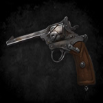
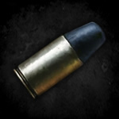
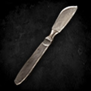
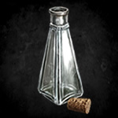
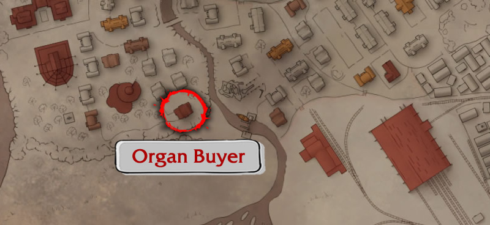

Welcome to our guide about money! Here I will show you step by step how to get rich selling organs at the black market. In short, we will attract bandits to deserted places, kill them, collect their organs and sell, simple like that!
BEWARE: This strategy is dangerous and requires some knowledge of the game's combat system. Therefore, I recommend that you take a look at our combat guide HERE.
Required Items
This strategy will require the following items:
1x

Fire Weapon
2+

Ammo
1+

Surgical Tool
3+

Empty Bottle
1x
Fire Weapon
2+
Ammo
1+
Surgical Tool
3+
Empty Bottle
*The durability of the weapon and surgical tool(s) must be at maximum or near it.
Introduction
Before we begin the step-by-step, it's important to clarify some things...
Enemies
In this method, our initial objective is to find an isolated bandit (mainly unarmed). There are two types of bandits in the game, see below who they are and where to find them:
White Face
This type of bandit is usually easier to face. They prefer to walk alone, and compared to the other type, seem to have a lower chance of carrying a weapon. They can be found during the night (12:00 AM ~ 07:30 AM) in healthy districts, in other words, districts that are not infected or destroyed.
Marauder
This type of bandit is easier to find but harder to face. They usually roam in groups, creating a real challenge to isolate one from the others. If you get spotted by one pay attention to your surroundings, others can spot you right away, even through walls! This variant can be found during the day or night in destroyed districts.
TIP #1: The higher the day you are on in the game, the higher will be the chances that enemies will have knives.
TIP #2: Sometimes it will be nearly impossible to lure your prey outside the city depending on the distance you have to travel. Guards can make sure of that interfering along the way. In that case, consider killing the enemy on sight, resulting in a loss on reputation on the local zone, if you feel it's worth it.
Terrain
When hunting your prey it is important to kill them outside the city, if you don't, your reputation will go to waste. To make things easier I marked on the map below all the zones you can commit any crime (against bandits or innocent) with no effect whatsoever on your reputation.
TIP: Stealing blood from corpses does not affect your reputation. So, make sure you get all the healthy blood you can find!
Selling Organs
About the organs sellout is plain simple. All you need to do is to bring them to that house marked on the map below. Once inside, go to the back side of the balcony where you will find a strange merchant. This man is only interested in healthy organs and, like other merchants, he has a limited amount of money to buy from you, which limits how much you can earn in a day.

TIP #1: Every night at 12:00 AM, this merchant's inventory is restocked, along with his money being replenished.
TIP #2: In case the merchant doesn't have money to buy all your organs I recommend keeping them to sell the next night. Despite the temptation to get some of his items, it's not usually worth it since money is more important on the early days.
Step by Step
After all that introduction, let's see how it works in practice, followed by some tips.
1 - Be prepared!
Choose a good hunting spot and make sure you have plenty of space in your inventory.
Make sure your thirst is fulfilled and your health is at maximum, if possible.
Only spend ammo and weapon durability on this method if you have enough to spare, otherwise, it's not worth it.
2 - Sneak into the city and find a solitary target
When choosing your target, take into consideration whether it's possible to lure your target outside the city without drawing others attention.
In case other bandits detect you, run out of the city until only one remains chasing you.
Take advantage of the stealth mechanic whenever you need it (hold C on the PC).
3 - Draw your target's attention and lure them outside the city
If your target has a knife, run away until they lose sight of you, then, find a new unarmed target, or, in case you have plenty of ammo, proceed to the next step.
Beware, enemies can detect you even through walls and buildings!
Whenever you leave a zone and enter another, a notification with the zone's name will appear in the up right corner of the screen.
4 - Kill your prey while avoiding any kind of damage.
When your target is almost down, they may try to flee, to prevent this, make sure to perform your 4th power attack with enough energy to repeat it again right after, leaving them no chance to escape.
If your target is using a knife, finish them off with one precise headshot.
5 - Collect the blood and all the organs of your prey.
The better your blade is, higher are the chances of successfully harvesting the organs.
If you plan to repair your scalpel later, don't let it break completely or even close to that.
The difficulty of harvesting each organ type not only affects the chance of success but also the amount of damage your scalpel takes.
6 - Sell the organs to the merchant.
The harder it is to collect the organ, the higher its price will be, following the order from the most ordinary to most valuable, we have: blood, liver, kidney, heart and brain.
To make the most of this system, hunt and visit the merchant regularly, ensuring all the money he makes passes to you.
Wrapping Up
It's very important to mention that as the days go on in the game, less worth it this method become. The reason for that is that the enemies will be more likely to carry knives and the money will lose it's value. Therefore, I don't recommend spending time on this method after day 6.
We use cookies and similar technologies to enable services and features on our website.
By using this website, you agree to the use of such information.


 Choose a good hunting spot and make sure you have plenty of space in your inventory.
Choose a good hunting spot and make sure you have plenty of space in your inventory.